In a bedroom, the ceiling is the one surface almost everyone forgets to think about.
It's easy to overlook in the bigger architectural picture, but a well-designed ceiling genuinely adds depth, character, and flair to a space that would otherwise just be four walls and a lid.
Whether your taste runs simple or elaborate, these twelve ceiling ideas are worth considering for your next bedroom refresh.

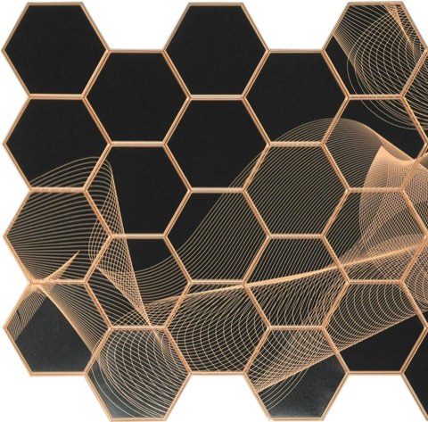
Dundee Deco Black Gold Faux Hexagon Mosaic PVC 3D Wall Panel, 3.2 ft X 1.6 ft
Shop on Amazon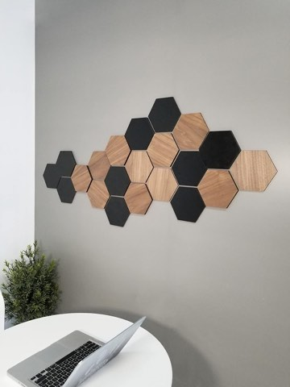
Walnut Hexagons, 3D Hexagon Wall Panels, Wooden Hexagon, Honeycomb Wall cover
Shop on Amazon1. Go Full Skylight
If you're fortunate enough to have one, a skylight does more for a top-floor bedroom than almost any other ceiling choice.
It floods the room with natural light during the day and opens up genuine views of the stars at night.
It blends the comfort of an indoor space with the beauty of what's actually outside, turning the bedroom into a quieter, more connected kind of retreat.
Install blackout shades if you want control over the light, so a clear night view doesn't come at the cost of actually sleeping through it.
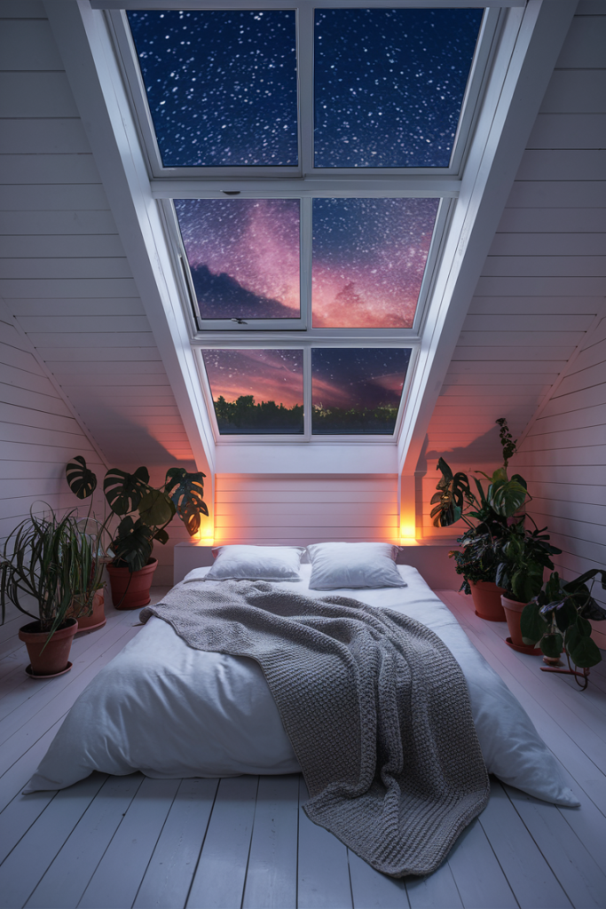
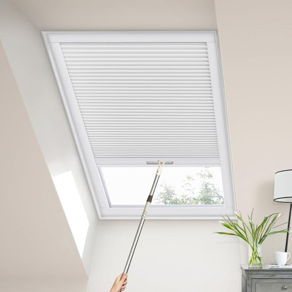
Blackout Skylight Window Blinds, Skylight Shades Cordless Cellular Shades Room
Shop on Amazon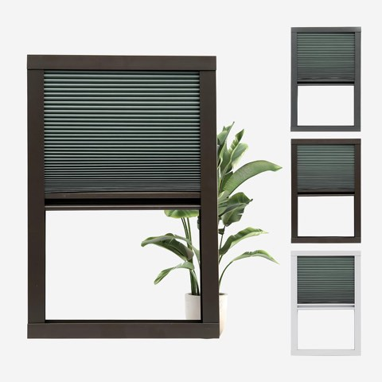
Skylight Shades Cordless Cellular Blinds 100% Blackout Honeycomb Shade for Ceiling Roof
Shop on Amazon2. Try a Geometric Ceiling
A geometric ceiling gives a bedroom a strong, contemporary edge.
Striking patterns and disciplined lines create real depth and turn the ceiling into an actual architectural statement.
Angular panels, stacked forms, or complex molding all push the same idea: dimension and artistic structure where a flat ceiling would otherwise do nothing.
A monochromatic palette keeps it classy. Contrasting colors instead draw more direct attention to the pattern itself.
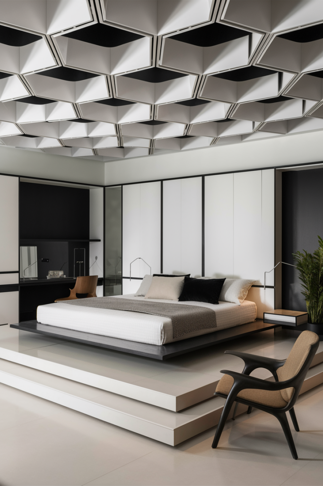
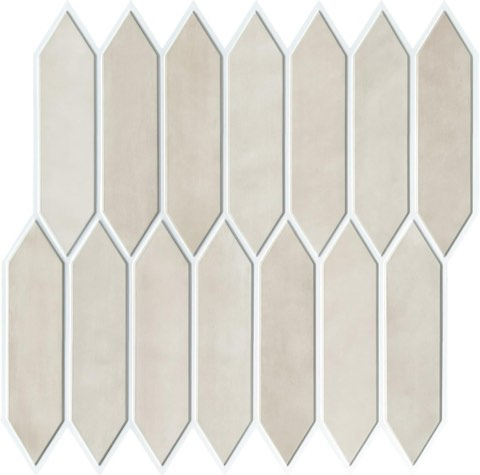
Commomy 10 Pcs Hexagon Peel and Stick Tiles 11.8"X11.8" Matte Ultra-Light & Thin PVC 3D
Shop on Amazon3. Drape the Ceiling in Fabric
For a romantic, softened feel, a fabric-draped ceiling is hard to beat.
Flowing fabric cascading down from a central point brings texture, warmth, and a genuine sense of elegance.
It creates a cozy, almost cocooned atmosphere. The kind of detail that makes a bedroom feel private and a little indulgent.
Pure white or cream fabric leans airy and celestial, especially woven through with fairy lights. Richer, more saturated textiles push the same idea toward something more dramatic.
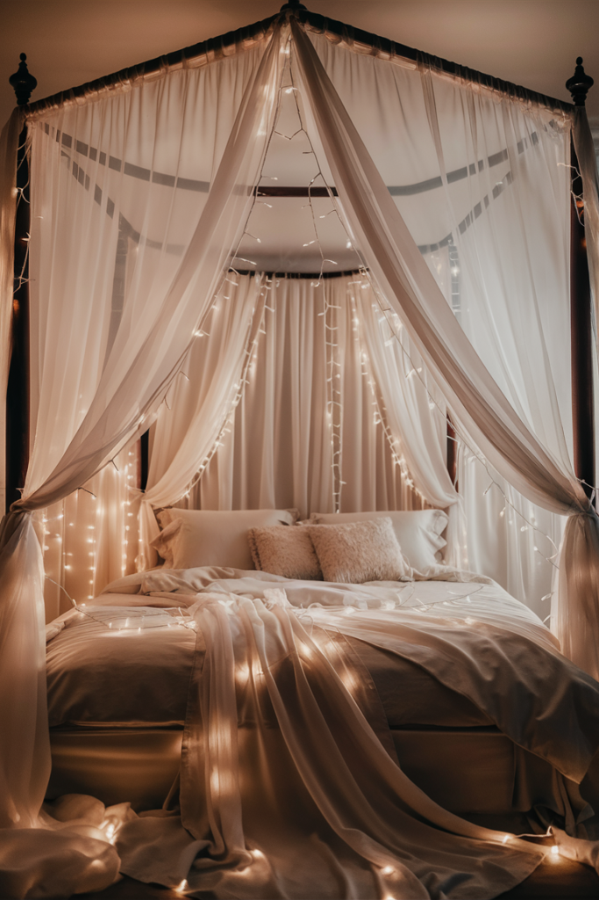
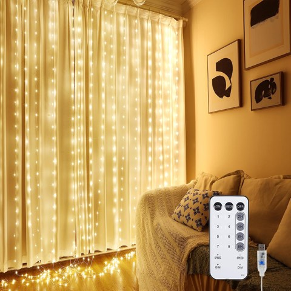
Fairy Curtain Lights for Bedroom, 9.8x9.8 Ft Fairy Lights Curtain with Remote
Shop on Amazon4. Install a Tin Tile Ceiling
A tin tile ceiling brings genuine historical character and intricate detail that's hard to replicate with anything modern.
The embossed pattern and metallic finish catch light in a way flat ceilings simply can't.
It's a timeless choice that adds texture and a sense of craftsmanship, giving the whole room a smarter, more considered feel.
Choose a warm copper or traditional silver finish for something classic, or go with a bold patina for a more dramatic, aged-metal statement overhead.
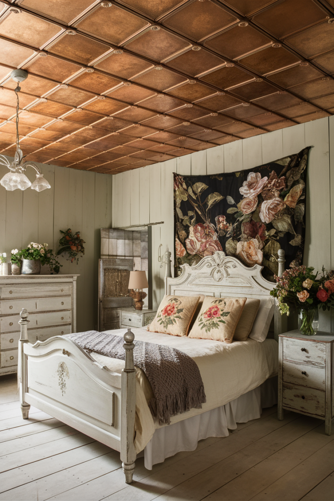
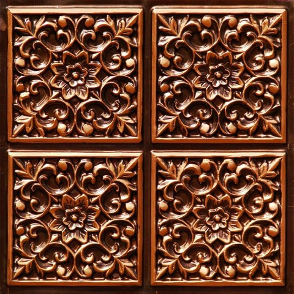
#109 Decorative Faux Tin PVC Ceiling Tiles Panels, 2' x 2' Glue Up, Pack of 12
Shop on Amazon5. Paint It
Sometimes the simplest move makes the biggest impact. A painted ceiling highlights color and character with almost no structural effort at all.
The right shade shifts the entire mood of the room, dramatic, soothing, or warm, depending entirely on what you choose.
It's a surprisingly powerful lever for how a bedroom actually feels.
Go deep and saturated for drama and refinement, or keep it light for something airier and more relaxed.
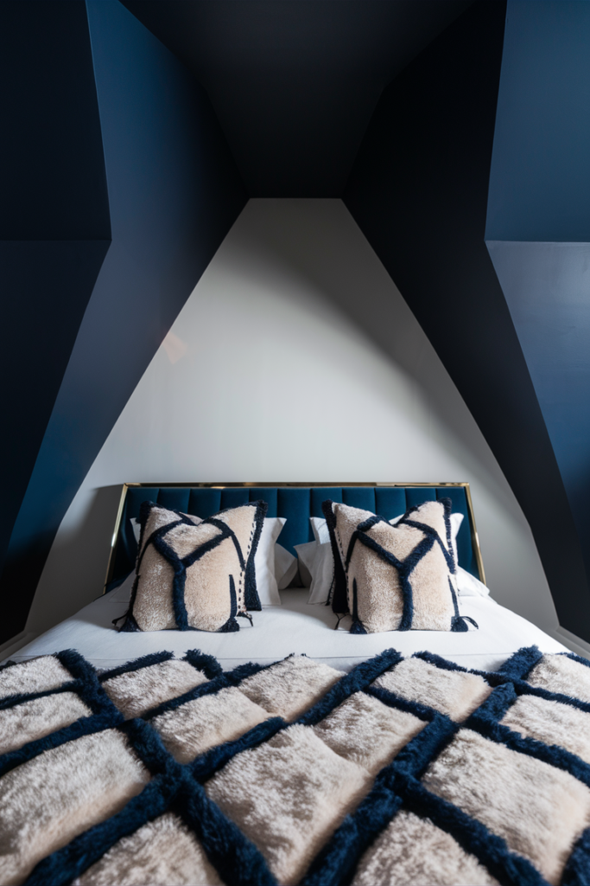

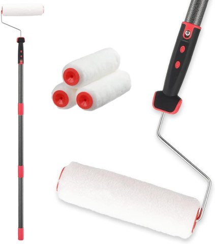
Paint Roller Kit with 6FT Extension Pole, 3 Roller Covers, for Ceiling Painting
Shop on Amazon6. Add Wallpaper Overhead
A wallpapered ceiling adds personality fast, with essentially endless options for pattern, texture, and color to choose from.
It brings genuine depth and charm overhead, turning the ceiling into an actual focal point rather than an afterthought above the room.
A soft floral print leans romantic and refined, especially paired with sheer canopy curtains. A bold geometric pattern pushes the same idea in a more graphic direction.
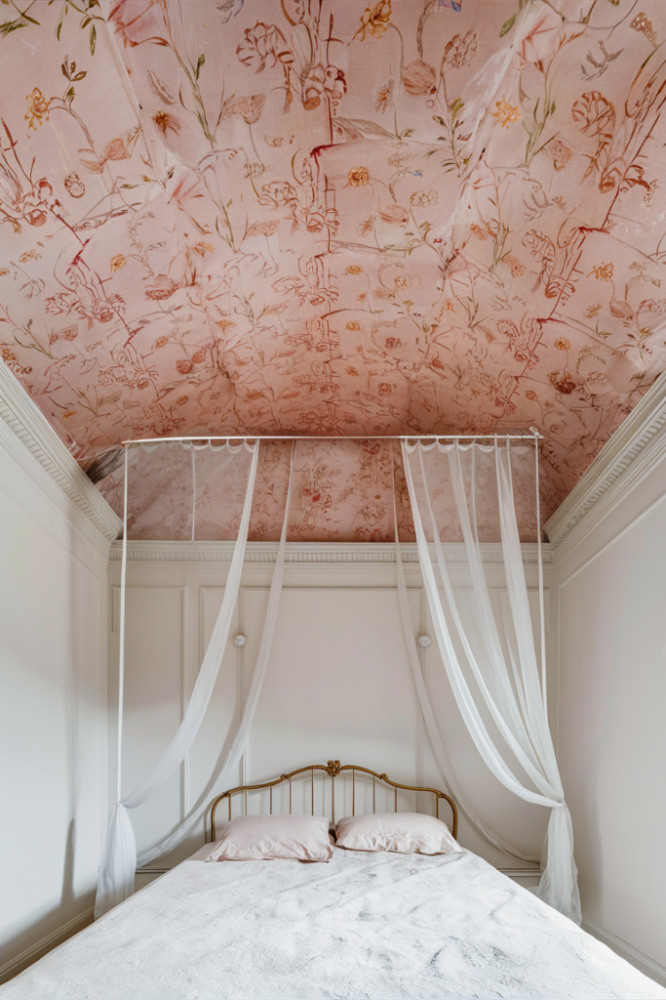
VEELIKE Pink Floral Peel and Stick Wallpaper Vintage Victorian Floral Wallpaper for Bedroom
Shop on Amazon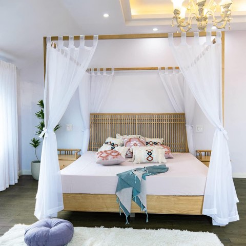
Linentalks Sheer Canopy Bed Curtains for King, Queen, Full and Twin Bed
Shop on Amazon7. Go Glamorous With a Mirrored Ceiling
A mirrored ceiling is an unapologetic move toward luxury.
The reflective surface bounces natural light around the room and creates the illusion of far more space than you actually have.
It brings a modern, glamorous edge, whether you go with a full mirror finish or just a few mirrored panels set into a more traditional ceiling design.
Keep it minimal for something soft and upscale, or go bold with tinted or patterned mirror panels for a genuinely dramatic statement.
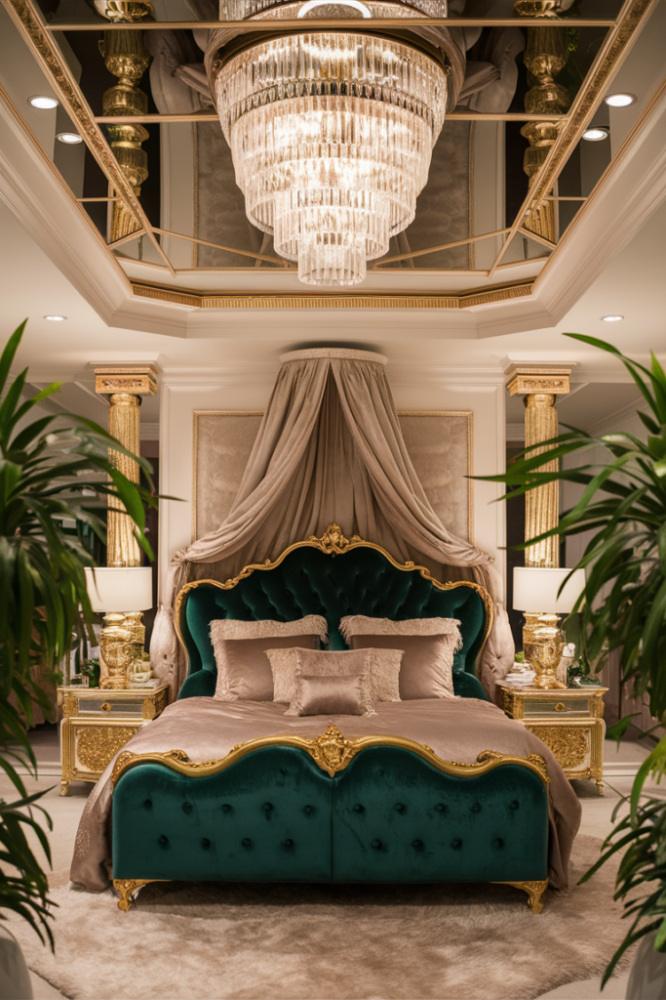
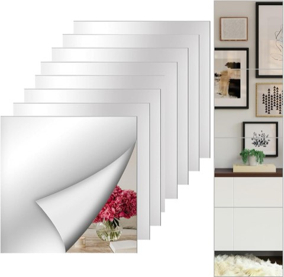
8 Pack Acrylic Mirror Tiles, 12 x 12 Inch Self-Adhesive Flexible Mirror Sheets
Shop on Amazon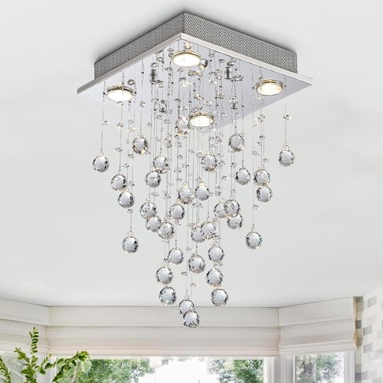
Bestier Chrome Modern Crystal Square Raindrop Chandelier Lighting Flush Mount LED Ceiling
Shop on Amazon8. Go Vaulted for Height
A vaulted ceiling brings genuine grandeur and openness through its high, angled structure.
The shape alone draws the eye upward and makes a room feel noticeably more spacious.
It's an architectural feature that works across styles. Exposed beams and natural wood lean rustic, while clean white paneling pushes it toward something brighter and more coastal.
Keep it light and neutral for an airy feel, or darken the tones for more drama and depth.
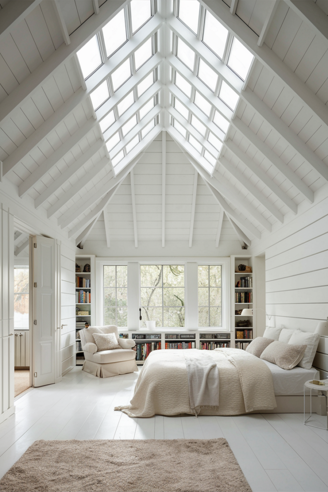
WoodyWalls Peel and Stick Wood Planks, Whitewash Shiplap Wall Panels
Shop on Amazon9. Create a Starry Night
For something genuinely dreamy, a starry night ceiling turns an ordinary bedroom into a quiet celestial escape.
Twinkling LED lights or glow-in-the-dark paint mimic a night sky directly overhead.
It's less about decoration and more about atmosphere. The effect makes a room feel peaceful and a little otherworldly the moment the lights come on.
Keep it soft and subtle for a calming glow, or go further with vibrant constellation patterns and galaxy-inspired color for something more dramatic.
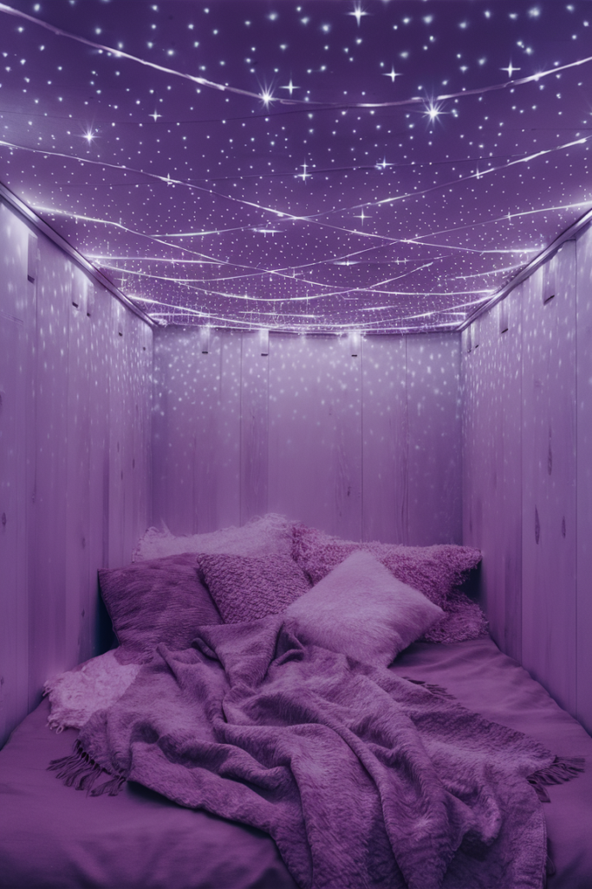
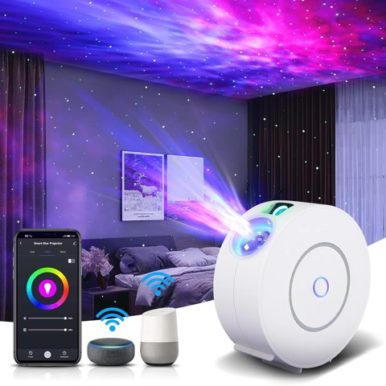
Galaxy Projector for Bedroom, Star Projector Galaxy Light, Northern Lights Projector
Shop on Amazon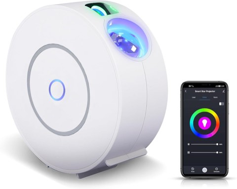
Smart Galaxy Star Projector, LED Nebula Ceiling Night Light with App & Voice Control
Shop on Amazon10. Expose the Wooden Beams
Exposed wooden beams bring warmth and character in a way few other ceiling choices can match.
The rustic charm and natural texture create a genuinely cozy, lived-in feeling overhead.
The depth comes from the structure itself. Beams crossing at different heights and angles create visual interest without any extra decoration needed.
Stain the wood in a rich natural tone for a classic rustic look, or paint it in a contrasting color if you want the same architectural interest with a more modern finish.
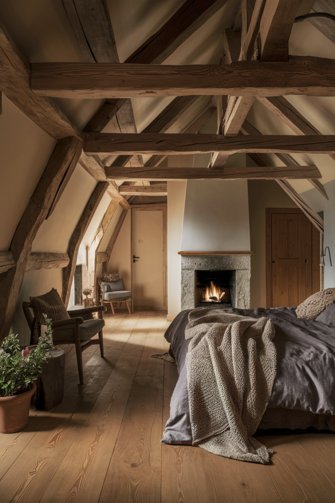
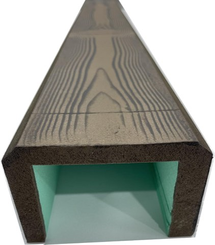
Faux Wood Beam, 48" Long, Wood Look, XPS Foam Material, Easy Installation, 4"x6", Walnut
Shop on Amazon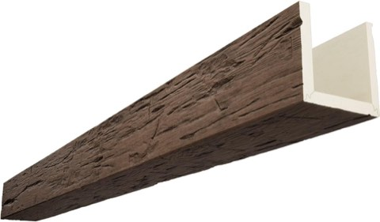
Timberthane Hand Hewn Faux Wood Beam, 3-Sided, U-Beam, 4"W x 4"H x 96"L, Aged Finish
Shop on Amazon11. Add Depth With a Tray Ceiling
A tray ceiling adds real depth and dimension through its recessed center, drawing the eye upward and making the whole room feel more spacious than it actually is.
It's a timeless choice with genuine architectural charm, and it photographs just as well in a minimalist space as a traditional one.
Keep it neutral for something soft and airy, or lean into dramatic contrast with dark tones and hidden LED strip lighting for something closer to a modern showpiece.
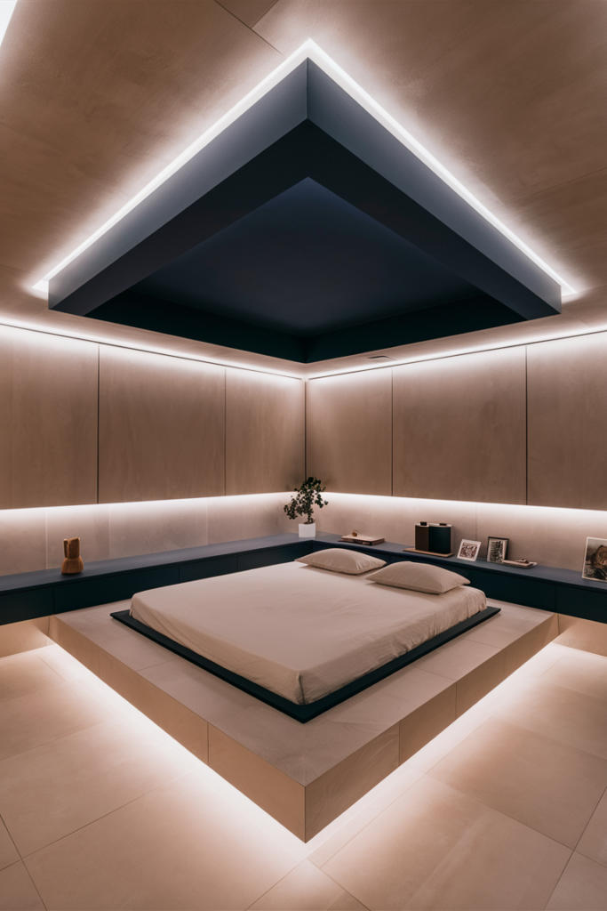
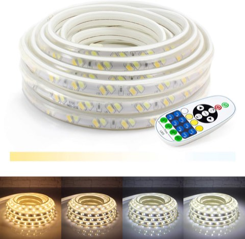
LED Flat Strip Lights, 50 ft 2-in-1 Warm White & Cool White Flexible Dimmable Lighting
Shop on Amazon12. Finish With a Coffered Ceiling
If you want a genuine touch of class, a coffered ceiling delivers it reliably.
The recessed, grid-like panels bring a classic, orderly structure that reads as elegant without trying too hard.
It's a traditional choice, but it works in more settings than you'd expect. Paint the panels a neutral tone for something subtle, or go bold with contrasting color for a real statement.
Add warm lighting along the panel edges, and the whole ceiling becomes a quiet source of ambiance rather than just architecture.
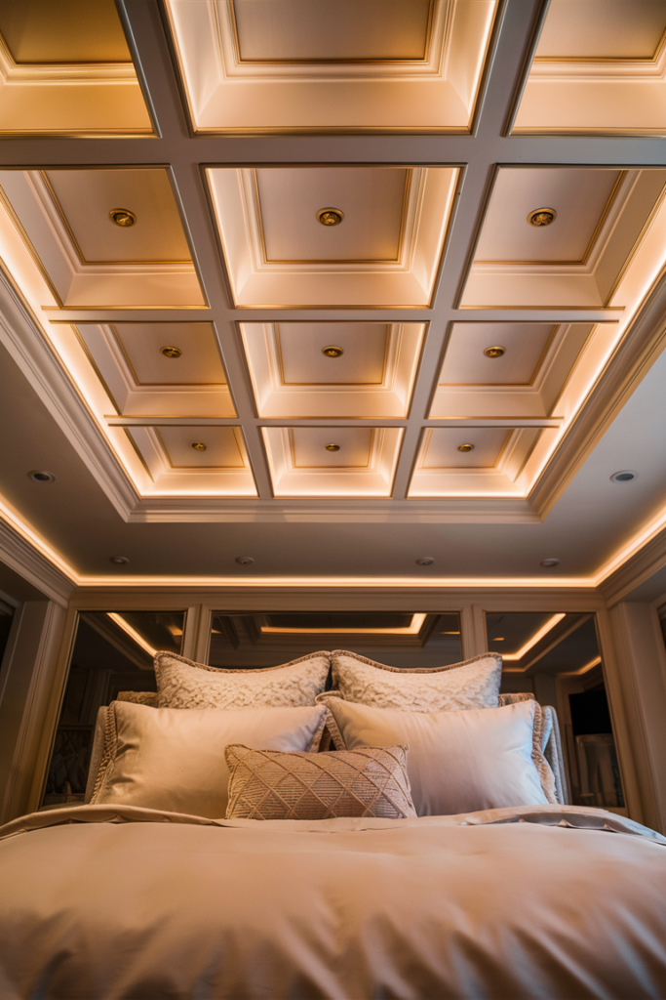
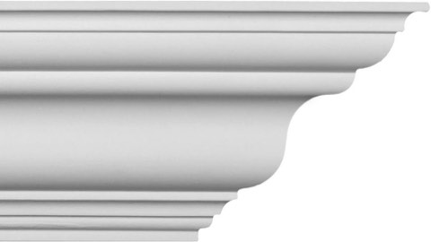
uDecor CM-1001 Crown Molding, 5-1/2" Durable Polyurethane, Easy Installation
Shop on Amazon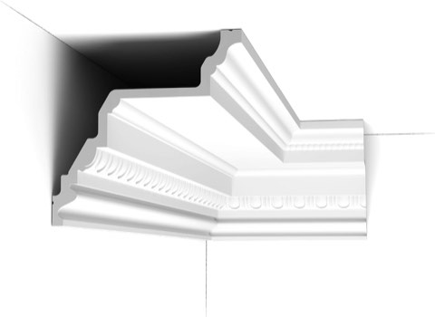
Orac Decor C307, Purotouch High Density Polyurethane Foam Crown Moulding, Primed White
Shop on AmazonYour Ceiling Is a Blank Canvas
Your bedroom ceiling is a blank canvas, ready and waiting.
Whether your taste leans traditional, rustic, or modern, these twelve ideas can help you build a room that feels both elegant and genuinely inviting.
Don't hesitate to think a little creatively here. Your perfect bedroom might just be one ceiling away from feeling completely finished.
Pick the one that actually matches how the room already feels right now, and let it quietly do the rest of the work for you.